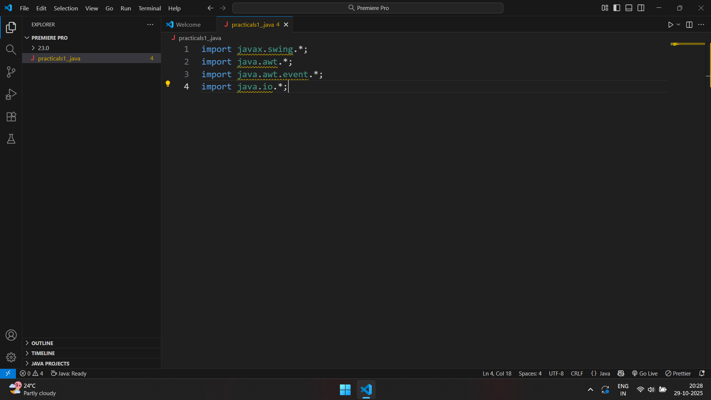

EXP1
Stack using Linked List - a
EXP2
stack using array
stack using linkedlist
EXP3
queue using array
queue using LL
EXP4
in-order travsal
post-order travsal
pre-order travsal
EXP5
E5-a DFS (recursion)
E5-b DFS (iterative)
EXP6
BFS (hospital management system)
BFS (bank customer service)
EXP7
prim's algorthim
krushal's algorithm
EXP8
dijisktra Smart City – Shortest Path for Ambulance
flyod washwell Tourist Attractions – All-Pairs Shortest Path
bellman ford Airports – Detect Negative Cycles
EXP9
Linear Search (Employee Attendance Check)
Binary Search (Product Availability in E-commerce)
EXP10
Bubble Sort (Football Player Scores – Descending Order)
Selection Sort (Movie Ratings – Descending Order)
Insertion Sort (Flight Departure Times – Ascending Order)
Merge Sort (Patient Priority – Ascending Order)
Quick Sort (Student Scores – Descending Order)